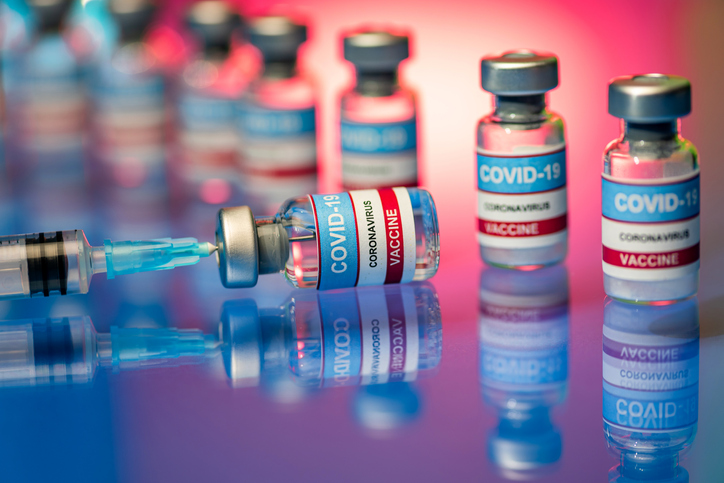

Vaccination is a simple, safe, and effective way of protecting people against harmful diseases, before they come into contact with them. It uses your body’s natural defenses to build resistance to specific infections and makes your immune system stronger. Vaccines train your immune system to create antibodies, just as it does when it’s exposed to a disease. However, because vaccines contain only killed or weakened forms of germs like viruses or bacteria, they do not cause the disease or put you at risk of its complications. Most vaccines are given by an injection, but some are given orally (by mouth) or sprayed into the nose.
Vaccination is a safe and effective way to prevent disease and save lives – now more than ever. Today there are vaccines available to protect against at least 20 diseases, such as diphtheria, tetanus, pertussis, influenza and measles. Together, these vaccines save the lives of up to 3 million people every year. When we get vaccinated, we aren’t just protecting ourselves, but also those around us. Some people, like those who are seriously ill, are advised not to get certain vaccines – so they depend on the rest of us to get vaccinated and help reduce the spread of disease. During the COVID-19 pandemic, vaccination continues to be critically important. The pandemic has caused a decline in the number of children receiving routine immunizations, which could lead to an increase in illness and death from preventable diseases. WHO has urged countries to ensure that essential immunization and health services continue, despite the challenges posed by COVID-19.More information about the importance of vaccines is available here.